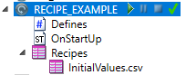
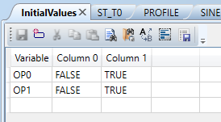

A recipe is a list of variables completed with one or more predefined sets of values. It is a powerful way of applying multiple values to variables at once at runtime. It can be used at startup to initialize complex variables or to load different profiles on some condition.
Recipes are displayed in the tree view, along with programs and other task/library items.

There are two ways to add a recipe
1. Create new empty recipe
To create an empty recipe, right-click on the selected task/library and select the command “Add New Recipe”. Motion Perfect will prompt for the name of the recipe. Recipe names follow the same rules as program name rules – it must start with a letter or an underscore and may contain only letters, digits or underscores.
Note: A csv extension will be automatically added to the name!
2. Import an existing csv file with values
To import an existing csv file with values, right-click on the selected task/library and select the command “Import Recipe”. Motion Perfect will prompt for the file name to import.
The file format is comma separated values. Every line in the file begins with the name (or path) to a variable, then come values separated by commas.
Example: A csv file with two variables OP0 and OP1, containing two values per variable
OP0;FALSE;TRUE
OP1;FALSE;TRUE
After a recipe is created or imported it can be edited with the recipe editor. To open a recipe, double-click on it in the tree view or right-click on it and select “Edit” command.

The recipe editor is a table with every row being an entry in the recipe. The first column is the path to the variable. Consecutive columns are values of the variable that could be applied with the function ApplyRecipeColumn
To add a new row to the recipe, click at the bottom empty row’s first column. This will add a new entry to the recipe and will display the selection dialog for selecting a variable.
To change a recipe entry, click on the corresponding cell in the table.
The table editor provides several commands:
|
Command |
Description |
|
Select Variable |
Select a variable from existing variables to add to the recipe or to change an existing entry |
|
Cut |
Cut selected row/cell and put it in the clipboard |
|
Copy |
Copy selected row/cell to clipboard |
|
Paste |
Paste clipboard contents to selected row/cell |
|
Find |
Open the find tool |
|
Find in project |
Open the find in project tool |
|
Replace |
Open the replace tool |
|
Select All |
Select everything |
|
Add New Column |
Add new column for values |
|
Rename Column |
Rename the selected column. Applicable only for value columns |
|
Delete Column |
Delete the selected column. Applicable only for value columns and only when number of value columns is greater than 1 |
Recipe columns are applied with the function ApplyRecipeColumn . This function expects two arguments
Example:
The above recipe (InitialValues) with two rows containing values for variables OP0 and OP1 are applied at startup of the task with ApplyRecipeColumn function.
In the Defines editor there is a line added that installs a handler for the #OnStartup event
#OnStartup OnStartUp
OnStartUp is a main program, that contains initialization code for the task that is executed on startup.
One of the tasks that are performed is applying the initial values for variables OP0 and OP1.
ApplyRecipeColumn('InitialValues.csv',0);